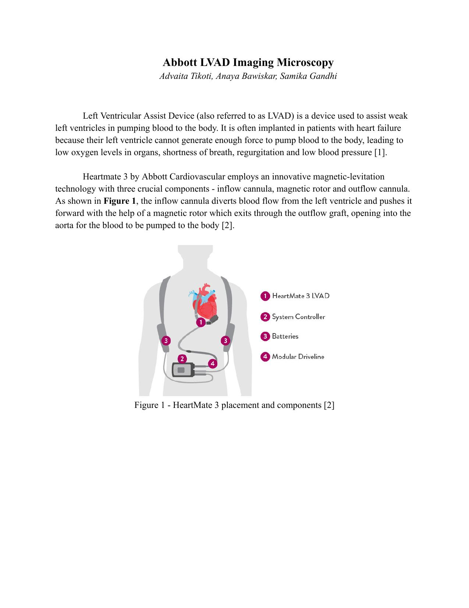
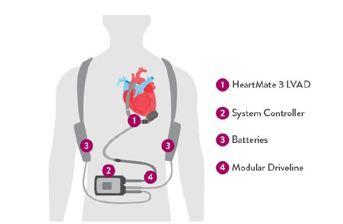
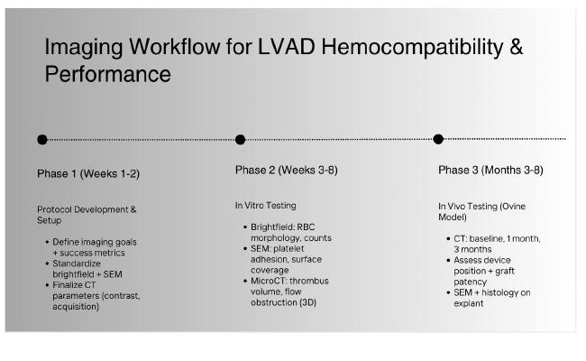
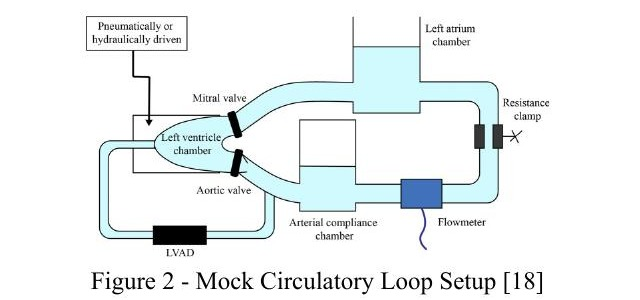

The HeartMate 3 is a magnetic-levitation LVAD that diverts blood from a failing left ventricle and pumps it into the aorta via an inflow cannula, magnetic rotor, and outflow graft. Because the pump surface stays in constant contact with blood, its biggest risk isn't mechanical failure, it's what the blood does when it touches the device: hemolysis, clotting, and inflammation, any of which can lead to stroke, bleeding, or device failure.
The aim of this project was to design a complete preclinical imaging and testing plan, grounded in ISO 10993-4 and ASTM standards, that quantitatively proves the HeartMate 3 is hemocompatible before it's allowed to progress from bench testing to animal trials to human patients.

Structured the plan as three sequential phases, so hemocompatibility could be checkpointed at each stage before committing to the next, more expensive and higher-stakes one.

Four imaging modalities, chosen so each one covers a different scale, from single cells to the whole device in 3D. For each, the justification, acquisition protocol, and acceptance criteria were locked before any testing began.

Provides rapid assessment of RBC morphology, platelet aggregation, and WBC activation in blood samples collected during flow-loop testing, the earliest possible signal of mechanically induced hemolysis or cellular activation. Aligned with ASTM F1841 (flow-loop testing) and ASTM F756 (hemolysis assessment criteria).
At baseline and every 30 minutes, 3 samples per loop are collected and prepared as Wright-Giemsa-stained blood smears. Imaged at 40x and 100x (oil immersion) under constant illumination, exposure, and aperture. 5 non-overlapping fields per smear, random sampling, captured at 2048×2048 px in uncompressed format.
Characterizes blood-device interactions directly on the LVAD's blood-contacting surfaces after flow-loop exposure. SEM's nanometer-scale resolution enables direct visualization of platelet adhesion, activation morphology, leukocyte attachment, and early fibrous deposition, the mechanistic root of clotting risk that can't be resolved with light microscopy. Supports thrombogenicity testing under ISO 10993-4.
After 6 hours of flow-loop exposure, the device is disassembled and blood-contacting surfaces are fixed in 2.5% glutaraldehyde for 24 hrs at 4°C, PBS-rinsed, then dehydrated through a graded ethanol series (30–100%), critical point dried, and sputter-coated with 5–10 nm gold. Imaged at 5–10 kV, 500x–5000x magnification, 8–10 mm working distance.
Resolves up to 50 micrometers, critical for something as spatially complex as clot formation. Unlike surface imaging, micro-CT builds a full 3D reconstruction of the device, turning scattered clot observations into a single spatial map of where thrombus actually forms, with quantifiable area/volume metrics from radiopaque contrast. Non-destructive, so the sample survives testing.
A mock circulatory loop (per ASTM F1841) simulates the left-ventricle pressure-volume environment at 37°C, 5–6 L/min flow, 120/80 mmHg, 50–150 Pa shear stress. Radiopaque contrast agents (iodine, gold, or barium sulfate) are introduced and the LVAD is run at varying speeds for ~4 hrs. Imaging uses a high-resolution X-ray system, 5–20 µm voxels, 40–70 kVp, 100–200 µA, full 360° rotation, reconstructed via filtered back projection.
Provides high-resolution, three-dimensional, non-invasive visualization of device geometry and vasculature in the living animal, detecting thrombus via contrast filling defects, and identifying graft kinking, malpositioning, or obstruction without ever opening the animal back up. Also used pre-implant to map anatomy. ECG-gated to minimize cardiac motion artifact; aligns with ISO 14708-5.
192-slice multidetector CT. A pre-implant scan maps baseline anatomy; follow-up imaging at baseline, 1 week, 1 month, and 3 months, under anesthesia with ECG gating. Tube voltage 100–120 kVp, current 200–400 mA with automatic exposure control, slice thickness 0.5–0.75 mm, low pitch/fast gantry rotation. IV contrast at 3–5 mL/s, 1–2 mL/kg via central venous catheter, followed by saline; 3D reconstructions generated for analysis.
Every imaging modality ties back to a hard numeric threshold, pulled from ISO 10993-4 and ASTM F756, so "looks fine under the microscope" is never the bar. The device has to clear these numbers to advance to the next phase.
In vivo, the graft also has to hold >95% of its diameter throughout the 90-day study, and the inflow cannula must stay within 15° of the ventricular long axis to avoid suction events. For context: the U.S. LVAD market runs $190K–220K per patient in the first year, with the device itself costing $80K–100K, so a rigorous, phased imaging plan isn't just a safety requirement, it's what keeps a very expensive therapy from failing after implantation.
Every image, dataset, and analysis pipeline in this study needed to be traceable, secure, and reproducible, not just for internal rigor, but because this data ultimately supports an FDA submission.
Brightfield and SEM images captured on EVOS and Field Emission SEM microscopes, transferred via encrypted LAN to Abbott's enterprise servers. CT volumetric data (DICOM) exported directly via encrypted PACS integration, retaining raw projection data, reconstructed volumes, and segmentation files.
All data lives on FDA-compliant enterprise servers under 21 CFR Part 11. Access is role-based with secure login, multi-factor authentication, and full audit trails on every access, modification, and analysis action.
Files follow Technique_Sample.No_UniqueID naming for full traceability. Metadata captures date, operator ID, protocol number, magnification/pixel size, stain/dye, implant name and location, plus scanner model, kVp/mA, voxel size, and contrast parameters for CT.
A breach triggers immediate access restriction, InfoSec/IT investigation, credential revocation, and a full audit log review. No data is ever stored on external or removable devices. All contributors sign NDAs; no personal-device photography is permitted.
Data is retained per Good Laboratory Practice for a minimum of 10 years post-PMA on validated enterprise servers with redundant backups, then securely destroyed with verification audits at the end of the retention period.
Acquisition settings stay locked within each imaging batch. Blind scoring reduces bias, and at least 10% of samples undergo independent secondary review before results are compared against predefined success criteria.
| Standard | Governs |
|---|---|
| ISO 10993-4 | Selection of tests for interactions with blood, hemolysis, thrombosis, platelet activation, complement activation |
| ASTM F756 | Hemolytic properties of materials; defines non-hemolytic / slightly hemolytic / hemolytic thresholds |
| ASTM F1841 | In vitro flow-loop assessment of hemolysis for continuous-flow blood pumps |
| ISO 14708-5 | Safety and performance requirements for active implantable circulatory support devices |
| 21 CFR Part 58 | Good Laboratory Practice for nonclinical laboratory studies (animal care, facilities, data integrity) |
| 21 CFR Part 11 | Electronic records and signatures, data storage, access control, and audit trail requirements |
| FDA Animal Studies Guidance | General considerations for animal studies evaluating medical devices, including histology requirements for embolism-prone devices |
The complete 22-page test plan, imaging goals, detailed protocols for each modality, data management plan, and full study timeline.